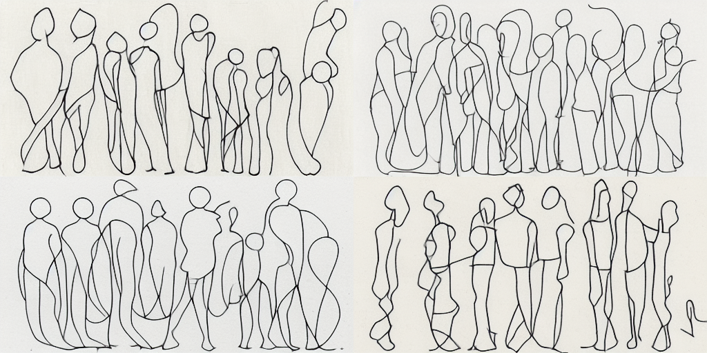
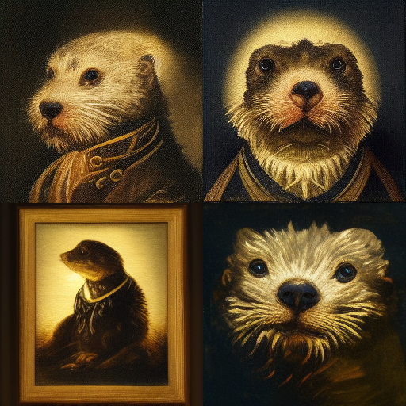
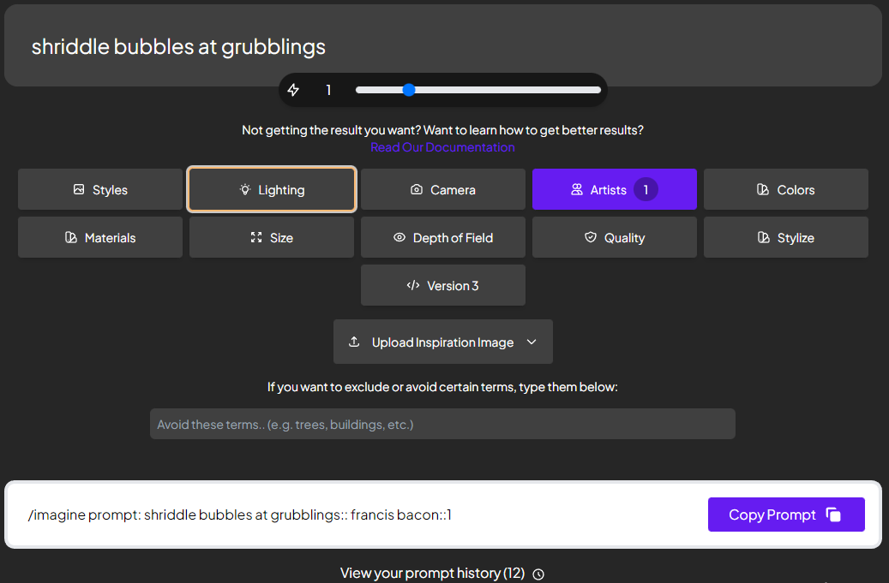
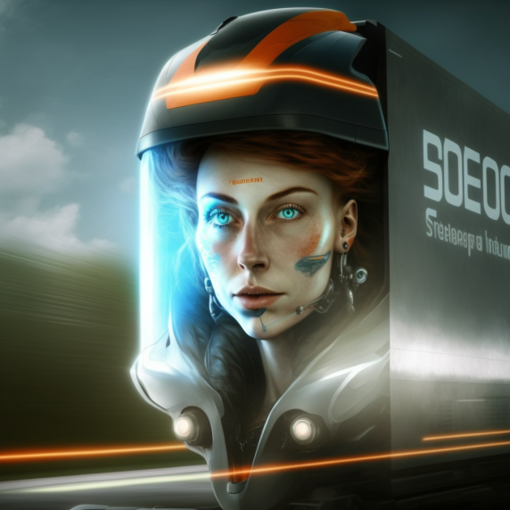
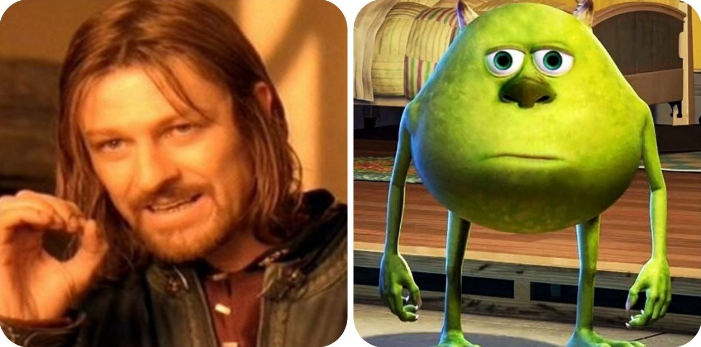
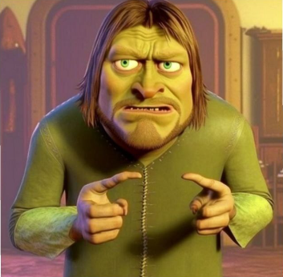
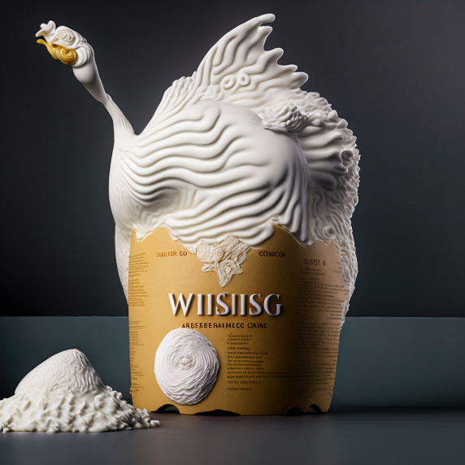
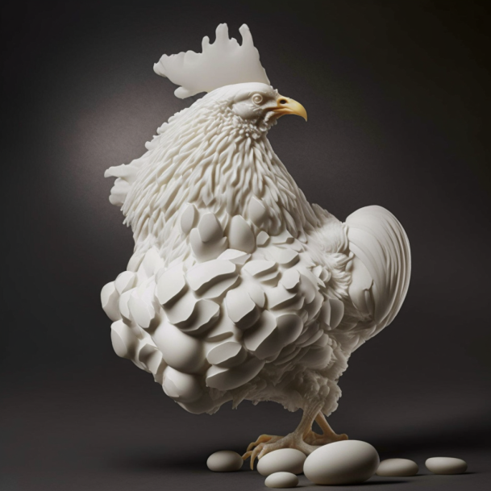

learning prompt engineering
Be descriptive, tell Midjourney what exactly you want to get.
continuous line drawing of a group of people standing next to each other, group of people, continuous one line vector drawing, minimal,abstract, --ar 16:8
print of a dutch golden age oil painting portrait of an otter wearing a ruff collar, warm lighting, chiaroscuro
letter, M L , Mobile Legends, Full color , HD , high definition, colorfull , beatiful imagem, beauty
There are special command line arguments you can find in the Midjourney official documentation, e.g.:
If you don't want to remember all the commands - there's a cool tool, helping you to make a Midjourney /imagine prompt visually:

You may use an image + text as your input:
/imagine prompt <source pic URI> lightspeed, realistic looking
But still be prepared for unpredictable results
Finally, you can mix two images in one with Remix /imagine prompt mode
You'll get this
Be patient: the AI does mistakes
Whipped egg whites sculpture of a chicken
... but chances are eventually it will do much better
We're almost through
but there's still a short quiz >>> for art connoisseurs.